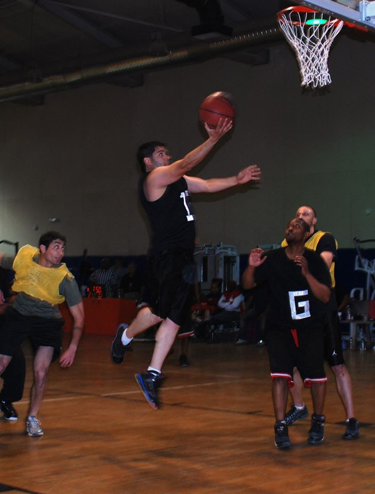

Mi nombre es Brian V. Castro, tengo 31 años de edad, Recido en Puerto Rico. Trabajo en el Departamento de defensa de los Estados Unidos.
Soy padre de dos hijos, de los cuales son mi razon y motivo de vivir.
Me encuentro estudiando Sistemas de Información en EDP University en el recinto de Hato Rey Puerto Rico.
En mi tiempo libre juego baloncesto, ir a la playa y tocar bateria.
Me gustan los animales en especial mi perro tengo un bullterrier llamado Ragnar la cual me ayuda a la ves como terapia.
Me considero una persona espontanea,feliz, responsable, cariñoso y me gusta hacer nuevas amistades.
Mi familia es mi norte el bienestar de ellos sus alegrias me llenan de
energia y siempre tratare de darle lo mejor hasta donde pueda tanto en el aprendisaje como en lo material.

Los deportes me apacionan en especial el baloncesto, por lo general todos los años me dedico a practicar uno nuevo, me encanta la aventura y en mi vida he logrado mezclar una cosa y la otra.
Por ejemplo practico el surf y buscando lugares donde practicar este deporte he aprendido de muchos lugares tanto dentro como fuera de Puerto Rico.
La musica me gusta y por tal razon tambien practico los instrumentos por lo usual la bateria aunque tambien practico otros instrumentos de vientos y percusion.

GRACIAS POR SU ATENCION